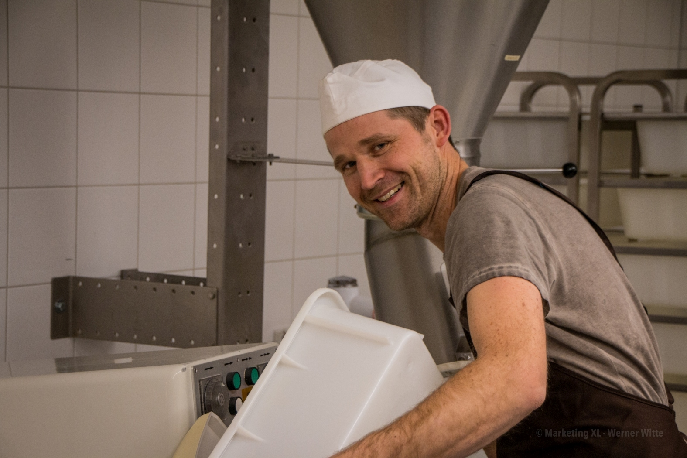
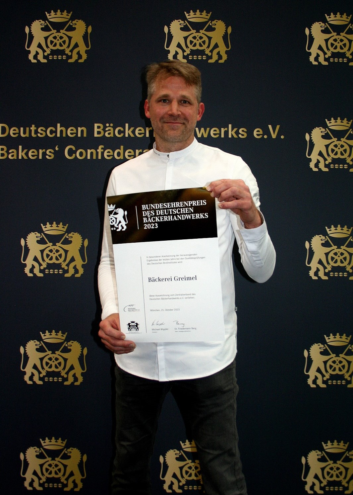
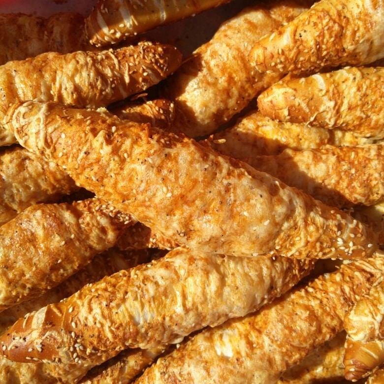

Traditionell Handgemacht – Back ma´s!
Unsere Handwerkskunst folgt dem Pfad der puristischen Perfektion. Wir wissen, dass die absolute Perfektion nie erreicht werden kann, dennoch ist es äußerst reizvoll, diesen anspruchsvollen Weg zu beschreiten.
Warum Aschau?

Bäcker Stefan Greimel und sein Team wurden mit dem Bundesehrenpreis ausgezeichnet. Die Ehrung erhalten Bäcker, die herausragende Ergebnisse bei unabhängig durchgeführten Brotprüfungen des Deutschen Brotinstituts erzielten. Die eigens geschulten Brotprüfer, die im Auftrag des Deutschen Brotinstituts in Weinheim, jährlich mehr als 15.000 Brotprüfungen durchführen, testen nach wissenschaftlichen Kriterien die sensorischen Eigenschaften und damit die handwerkliche Qualität der Backwaren. Das größte Gewicht liegt hierbei auf dem Geschmack. Die besten Brote, die die geschulten Brotexperten überzeugen, bekommen dabei die Bestnote „Sehr gut“. Erreicht ein Produkt dabei drei Jahre in Folge die Höchstbewertung, so vergibt das Brotinstitut hierfür eine Gold-Prämierung. Diese langjährige Qualität von Backwaren im Sortiment ist damit Maßstab für die Qualifizierung zum Bundesehrenpreis und wurde nur den besten Bäckereien in Deutschland verliehen.
Unsere Besonderheiten – "EURO-Brezen" und "Back ma´s – Stangerl"
Wohl am bekanntesten sind unsere "EURO-Brezen" und "Back ma´s – Stangerl". Unsere wahre Stärke liegt jedoch zweifellos in der Kunst der Fermentation. Durch die Führung von Teigen mit Sauerteigen und Vorteigen über lange Zeiträume, ohne den Einsatz von Zusätzen, leben wir unsere Vision. Diese gelebte Vision strebt nach perfekten Backwaren, die sowohl Genuss als auch bewusste Ernährung in ihrer natürlichsten Form vereinen. Dies ist unsere Leidenschaft und zugleich unser Herzstück.
